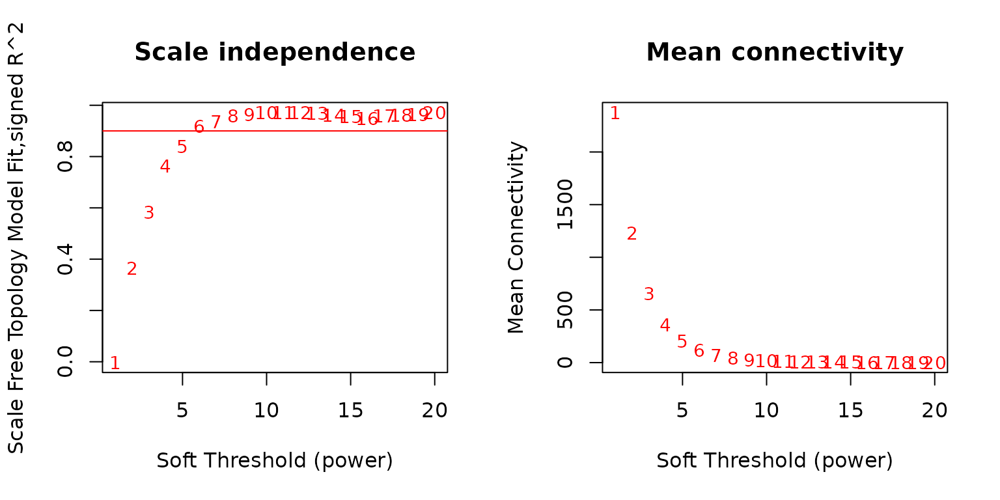
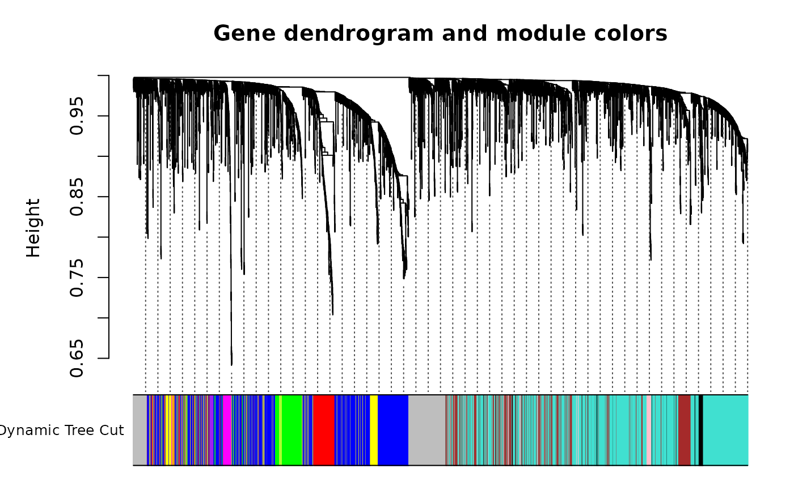
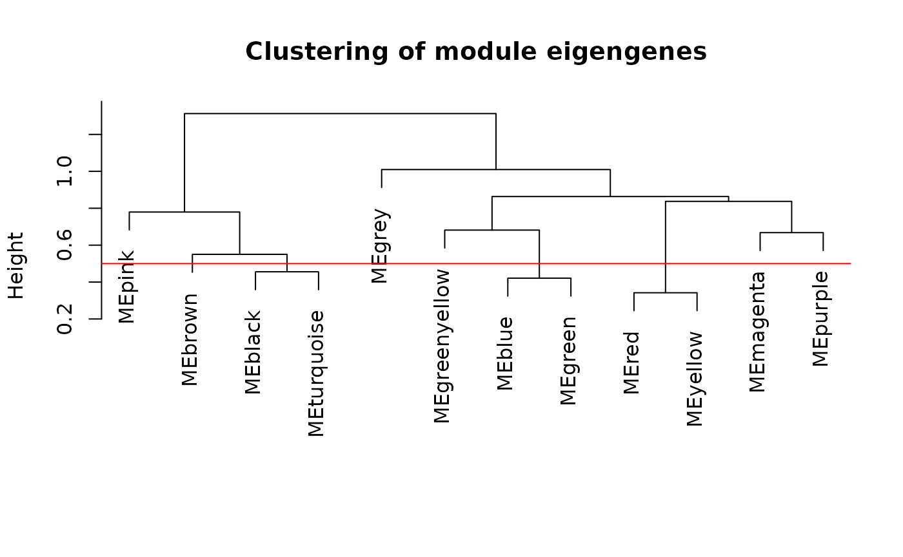
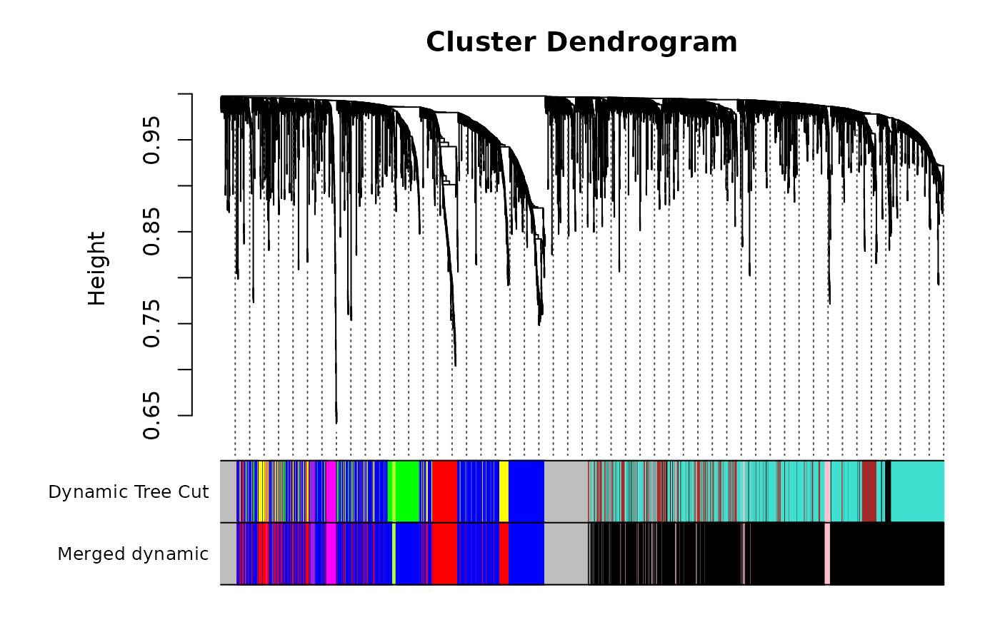
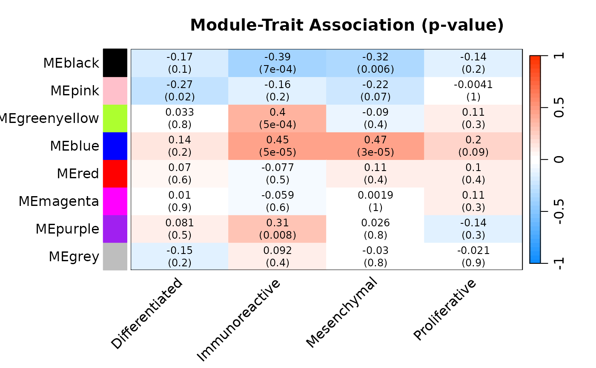

Example of WGCNA Analysis
Using Ovarian Cancer CPTAC Dataset as Example
wgcna_example.RmdPurpose
Example of WGCNA analysis. The package is available on CRAN. The tutorial available at UCLA web-site. Here we use our own ovarian cancer CPTAC data set.
Loading
Libraries
library(WGCNA)
options(stringsAsFactors = FALSE)
disableWGCNAThreads() # on RStudio for some reason multithreading does not work
library(MSnSet.utils)Data as MSnSet object
data("cptac_oca")WGCNA seems to be tolerant to missing values, but we subset the data for the sake of faster computation.
oca.set <- oca.set[complete.cases(exprs(oca.set)),]Selecting Transform Power
Scanning powers to find the ones that produce scale-free topology.
powers = 1:20
sft <- pickSoftThreshold(t(exprs(oca.set)),
powerVector = powers,
networkType = "signed",
verbose = 0)## Power SFT.R.sq slope truncated.R.sq mean.k. median.k. max.k.
## 1 1 0.00289 4.00 0.994 2370.00 2370.000 2450.0
## 2 2 0.36400 -19.00 0.927 1230.00 1220.000 1350.0
## 3 3 0.58300 -11.70 0.886 655.00 647.000 796.0
## 4 4 0.76200 -8.09 0.929 359.00 350.000 499.0
## 5 5 0.84000 -5.84 0.945 202.00 193.000 328.0
## 6 6 0.91800 -4.53 0.973 117.00 109.000 227.0
## 7 7 0.93600 -3.96 0.980 69.70 62.500 167.0
## 8 8 0.95800 -3.45 0.993 42.60 36.600 127.0
## 9 9 0.96400 -3.07 0.994 26.80 21.800 99.5
## 10 10 0.97200 -2.76 0.996 17.30 13.200 79.6
## 11 11 0.97200 -2.53 0.991 11.50 8.210 64.8
## 12 12 0.97000 -2.33 0.983 7.89 5.180 53.6
## 13 13 0.96900 -2.18 0.979 5.56 3.340 45.0
## 14 14 0.96000 -2.07 0.968 4.03 2.210 38.1
## 15 15 0.95600 -1.97 0.961 3.00 1.490 32.7
## 16 16 0.94800 -1.90 0.954 2.30 1.010 28.6
## 17 17 0.95800 -1.82 0.964 1.81 0.689 25.2
## 18 18 0.96200 -1.76 0.971 1.45 0.475 22.3
## 19 19 0.96300 -1.71 0.970 1.20 0.332 19.9
## 20 20 0.97200 -1.67 0.981 1.00 0.232 17.9
par(mfrow = c(1,2))
cex1 = 0.9
plot(sft$fitIndices[,1],
-sign(sft$fitIndices[,3])*sft$fitIndices[,2],
xlab="Soft Threshold (power)",
ylab="Scale Free Topology Model Fit,signed R^2",type="n",
main = paste("Scale independence"))
text(sft$fitIndices[,1],
-sign(sft$fitIndices[,3])*sft$fitIndices[,2],
labels=powers,cex=cex1,col="red")
# this line corresponds to using an R^2 cut-off of h
abline(h=0.90,col="red")
# Mean connectivity as a function of the soft-thresholding power
plot(sft$fitIndices[,1],
sft$fitIndices[,5],
xlab="Soft Threshold (power)",
ylab="Mean Connectivity",
type="n",
main = paste("Mean connectivity"))
text(sft$fitIndices[,1],
sft$fitIndices[,5],
labels=powers,
cex=cex1,
col="red")
The lowest power that results in crossing in 0.9 threshold is 10. Therefore we’ll set it as a final value.
softPower = 10Clustering. First Round.
The recommended type of correlation is signed. That way correlations
+1 and -1 will have different meaning. In case of unsigned correlation
the sign obviosly does not matter and genes with +1 correlation as close
to each other as -1 correlation. In case of (recommended) signed
correlation the adjacency (or 1 - distance) is calculated as
adjacency = (0.5*(1+cor))^power.
The gene-gene adjacencies converted to topological overlap. This helps to “smooth” correlation structure as it relies not only direct gene-gene correlations, but also the correlations with genes that are connected in common.
TOM <- TOMsimilarity(adjacency.mat, TOMType = "unsigned")## ..connectivity..
## ..matrix multiplication (system BLAS)..
## ..normalization..
## ..done.Finally adjacency or its analog, topological overlap, converted to distance.
dissTOM = 1-TOMCalling base R hclust function to perform hierarchical
clustering.
Plot the resulting clustering tree
plot(geneTree, xlab="", sub="",
main = "Gene clustering on TOM-based dissimilarity",
labels = FALSE, hang = 0.04)
Dynamic Tree Cut
Cutting the tree to identify the modules.
minModuleSize <- 20 # 20 is default
dynamicMods <- cutreeDynamic(dendro = geneTree,
distM = dissTOM,
# deepSplit = 2,
# pamRespectsDendro = FALSE,
# method= "tree",
minClusterSize = minModuleSize)## ..cutHeight not given, setting it to 0.996 ===> 99% of the (truncated) height range in dendro.
## ..done.Coloring The Modules
As it is evident from the commented code, it is possible to define
coloring in multiple ways. It is practical to take advantage of WGCNA’s
labels2colors because they provide human-readable names to
the modules. Although leveraging RColorBrewer may provide
better colors, however the names will be hex color codes, which makes
invonvenient naming.
# Convert numeric lables into colors
library(RColorBrewer)
# dynamicColors <- labels2colors(dynamicMods, colorSeq = brewer.pal(11,'Spectral'))
# this `standardColors()` is a bit nicer as the colors come with names
dynamicColors <- labels2colors(dynamicMods, colorSeq = standardColors())
# Plot the dendrogram and colors underneath
plotDendroAndColors(geneTree, dynamicColors, "Dynamic Tree Cut",
dendroLabels = FALSE, hang = 0.03,
addGuide = TRUE, guideHang = 0.05,
main = "Gene dendrogram and module colors")
Decision on Module Merger
Modules can be merged if they are too similar. The similarity is quantified as correlation between the eigengenes. Threshold for module merged visualized on the dendrogram.
Calculating eigengenes.
MEList <- moduleEigengenes(t(exprs(oca.set)), colors = dynamicColors)
MEs <- MEList$eigengenesCalculate distances between module eigengenes. This is equivalent to signed correlation distance. That is +1 correlation is zero distance or very similar modules, while -1 are the furthest modules possible.
MEDiss <- 1 - cor(MEs)Cluster module eigengenes to find out which are to be merged (assuming the distance is no larger then a predefined threshold).
Plot the cut line into the dendrogram.
plot(METree, main = "Clustering of module eigengenes",
xlab = "", sub = "")
MEDissThres <- 0.5 # default value is 0.2. 0.5 here is for demo purpose
abline(h=MEDissThres, col = "red")
Module Merger
Call an automatic merging function. The threshold is defined above
MEDissThres = 0.5. These are going to be the
final modules.
merge <- mergeCloseModules(t(exprs(oca.set)),
dynamicColors,
cutHeight = MEDissThres,
verbose = 3)## mergeCloseModules: Merging modules whose distance is less than 0.5
## multiSetMEs: Calculating module MEs.
## Working on set 1 ...
## moduleEigengenes: Calculating 12 module eigengenes in given set.
## multiSetMEs: Calculating module MEs.
## Working on set 1 ...
## moduleEigengenes: Calculating 9 module eigengenes in given set.
## multiSetMEs: Calculating module MEs.
## Working on set 1 ...
## moduleEigengenes: Calculating 8 module eigengenes in given set.
## Calculating new MEs...
## multiSetMEs: Calculating module MEs.
## Working on set 1 ...
## moduleEigengenes: Calculating 8 module eigengenes in given set.
moduleColors <- merge$colorsShow both original and merged modules.
plotDendroAndColors(geneTree, cbind(dynamicColors, moduleColors),
c("Dynamic Tree Cut", "Merged dynamic"),
dendroLabels = FALSE, hang = 0.03,
addGuide = TRUE, guideHang = 0.05,
marAll = c(1, 7, 3, 1))
Recalculating eigengenes.
MEs0 <- moduleEigengenes(t(exprs(oca.set)), moduleColors)$eigengenes
MEs <- orderMEs(MEs0)Module-Trait Association
Preparing traits data.
datTraits <- pData(oca.set)[,grep('binary', varLabels(oca.set))]
colnames(datTraits) <- sub('.binary','',colnames(datTraits))
head(datTraits)## Differentiated Immunoreactive Mesenchymal Proliferative
## TCGA-13-1484 TRUE TRUE FALSE TRUE
## TCGA-13-1488 TRUE TRUE FALSE TRUE
## TCGA-13-1489 TRUE FALSE FALSE FALSE
## TCGA-13-1494 TRUE FALSE TRUE TRUE
## TCGA-13-1495 TRUE FALSE FALSE TRUE
## TCGA-13-1499 FALSE TRUE TRUE TRUECalculating correlations and associated p-values.
moduleTraitCor = cor(MEs, datTraits, use = "p");
moduleTraitPvalue = corPvalueStudent(moduleTraitCor, ncol(oca.set));Displaying correlations and their p-values as a heatmap.
textMatrix <- paste(signif(moduleTraitCor, 2),
"\n(",
signif(moduleTraitPvalue, 1),
")", sep = "");
textMatrix <- matrix(textMatrix, ncol = ncol(moduleTraitCor))
par(mar = c(6, 8, 3, 2))
labeledHeatmap(Matrix = moduleTraitCor,
xLabels = colnames(datTraits),
yLabels = names(MEs),
ySymbols = names(MEs),
colorLabels = FALSE,
# colors = greenWhiteRed(50),
colors = blueWhiteRed(50),
textMatrix = textMatrix,
setStdMargins = FALSE,
cex.text = 0.75,
zlim = c(-1,1),
main = paste("Module-Trait Association (p-value)"))
Ontology Enrichment. Reactome.
# split by module color
features <- sub('\\.\\d+','',featureNames(oca.set))
clustList <- tapply(features, moduleColors, c)
library(org.Hs.eg.db)
clustList <- lapply(clustList, intersect, mappedRkeys(org.Hs.egREFSEQ2EG))
clustEG <- lapply(clustList, function(x) sapply(as.list(org.Hs.egREFSEQ2EG[x]), `[`, 1))
library(clusterProfiler)
library(ReactomePA)
xx <- compareCluster(clustEG, fun="enrichPathway",
organism="human", pvalueCutoff=0.05,
qvalueCutoff=0.05,
pAdjustMethod="none",
universe=unlist(clustEG))
# plot(xx, colorBy="qvalue")
dotplot(xx)
library(dplyr)
summary(xx) %>%
dplyr::select(-geneID) %>%
group_by(Cluster) %>%
slice_min(order_by = p.adjust, n = 3) %>%
kable()| Cluster | ID | Description | GeneRatio | BgRatio | RichFactor | FoldEnrichment | zScore | pvalue | p.adjust | qvalue | Count |
|---|---|---|---|---|---|---|---|---|---|---|---|
| black | R-HSA-8953854 | Metabolism of RNA | 422/1604 | 494/3377 | 0.8542510 | 1.798507 | 18.267077 | 0.0000000 | 0.0000000 | 0.0000000 | 422 |
| black | R-HSA-72203 | Processing of Capped Intron-Containing Pre-mRNA | 194/1604 | 214/3377 | 0.9065421 | 1.908599 | 13.061062 | 0.0000000 | 0.0000000 | 0.0000000 | 194 |
| black | R-HSA-72163 | mRNA Splicing - Major Pathway | 147/1604 | 154/3377 | 0.9545455 | 2.009663 | 12.197079 | 0.0000000 | 0.0000000 | 0.0000000 | 147 |
| black | R-HSA-72172 | mRNA Splicing | 147/1604 | 154/3377 | 0.9545455 | 2.009663 | 12.197079 | 0.0000000 | 0.0000000 | 0.0000000 | 147 |
| blue | R-HSA-199991 | Membrane Trafficking | 160/901 | 343/3377 | 0.4664723 | 1.748365 | 8.819442 | 0.0000000 | 0.0000000 | 0.0000000 | 160 |
| blue | R-HSA-5653656 | Vesicle-mediated transport | 164/901 | 368/3377 | 0.4456522 | 1.670330 | 8.216556 | 0.0000000 | 0.0000000 | 0.0000000 | 164 |
| blue | R-HSA-397014 | Muscle contraction | 42/901 | 60/3377 | 0.7000000 | 2.623640 | 7.653869 | 0.0000000 | 0.0000000 | 0.0000000 | 42 |
| greenyellow | R-HSA-909733 | Interferon alpha/beta signaling | 11/19 | 35/3377 | 0.3142857 | 55.860150 | 24.537226 | 0.0000000 | 0.0000000 | 0.0000000 | 11 |
| greenyellow | R-HSA-913531 | Interferon Signaling | 15/19 | 154/3377 | 0.0974026 | 17.312030 | 15.583891 | 0.0000000 | 0.0000000 | 0.0000000 | 15 |
| greenyellow | R-HSA-1280215 | Cytokine Signaling in Immune system | 15/19 | 334/3377 | 0.0449102 | 7.982194 | 10.110015 | 0.0000000 | 0.0000000 | 0.0000000 | 15 |
| grey | R-HSA-901042 | Calnexin/calreticulin cycle | 7/307 | 11/3377 | 0.6363636 | 7.000000 | 6.302194 | 0.0000115 | 0.0000115 | 0.0054523 | 7 |
| grey | R-HSA-532668 | N-glycan trimming in the ER and Calnexin/Calreticulin cycle | 9/307 | 19/3377 | 0.4736842 | 5.210526 | 5.819344 | 0.0000154 | 0.0000154 | 0.0054523 | 9 |
| grey | R-HSA-5357905 | Regulation of TNFR1 signaling | 8/307 | 16/3377 | 0.5000000 | 5.500000 | 5.704787 | 0.0000287 | 0.0000287 | 0.0067764 | 8 |
| magenta | R-HSA-9711123 | Cellular response to chemical stress | 9/52 | 135/3377 | 0.0666667 | 4.329487 | 4.936792 | 0.0001699 | 0.0001699 | 0.0364590 | 9 |
| magenta | R-HSA-9615710 | Late endosomal microautophagy | 4/52 | 20/3377 | 0.2000000 | 12.988461 | 6.723724 | 0.0002020 | 0.0002020 | 0.0364590 | 4 |
| magenta | R-HSA-445095 | Interaction between L1 and Ankyrins | 3/52 | 10/3377 | 0.3000000 | 19.482692 | 7.318983 | 0.0003831 | 0.0003831 | 0.0461023 | 3 |
| pink | R-HSA-190840 | Microtubule-dependent trafficking of connexons from Golgi to the plasma membrane | 14/68 | 14/3377 | 1.0000000 | 49.661765 | 26.151447 | 0.0000000 | 0.0000000 | 0.0000000 | 14 |
| pink | R-HSA-190861 | Gap junction assembly | 14/68 | 14/3377 | 1.0000000 | 49.661765 | 26.151447 | 0.0000000 | 0.0000000 | 0.0000000 | 14 |
| pink | R-HSA-190872 | Transport of connexons to the plasma membrane | 14/68 | 14/3377 | 1.0000000 | 49.661765 | 26.151447 | 0.0000000 | 0.0000000 | 0.0000000 | 14 |
| purple | R-HSA-6803157 | Antimicrobial peptides | 10/25 | 16/3377 | 0.6250000 | 84.425000 | 28.882925 | 0.0000000 | 0.0000000 | 0.0000000 | 10 |
| purple | R-HSA-9664323 | FCGR3A-mediated IL10 synthesis | 7/25 | 20/3377 | 0.3500000 | 47.278000 | 17.923925 | 0.0000000 | 0.0000000 | 0.0000000 | 7 |
| purple | R-HSA-6798695 | Neutrophil degranulation | 14/25 | 288/3377 | 0.0486111 | 6.566389 | 8.528645 | 0.0000000 | 0.0000000 | 0.0000001 | 14 |
| red | R-HSA-1474244 | Extracellular matrix organization | 58/403 | 139/3377 | 0.4172662 | 3.496546 | 11.063480 | 0.0000000 | 0.0000000 | 0.0000000 | 58 |
| red | R-HSA-166658 | Complement cascade | 28/403 | 37/3377 | 0.7567568 | 6.341359 | 12.024378 | 0.0000000 | 0.0000000 | 0.0000000 | 28 |
| red | R-HSA-977606 | Regulation of Complement cascade | 27/403 | 36/3377 | 0.7500000 | 6.284739 | 11.733291 | 0.0000000 | 0.0000000 | 0.0000000 | 27 |